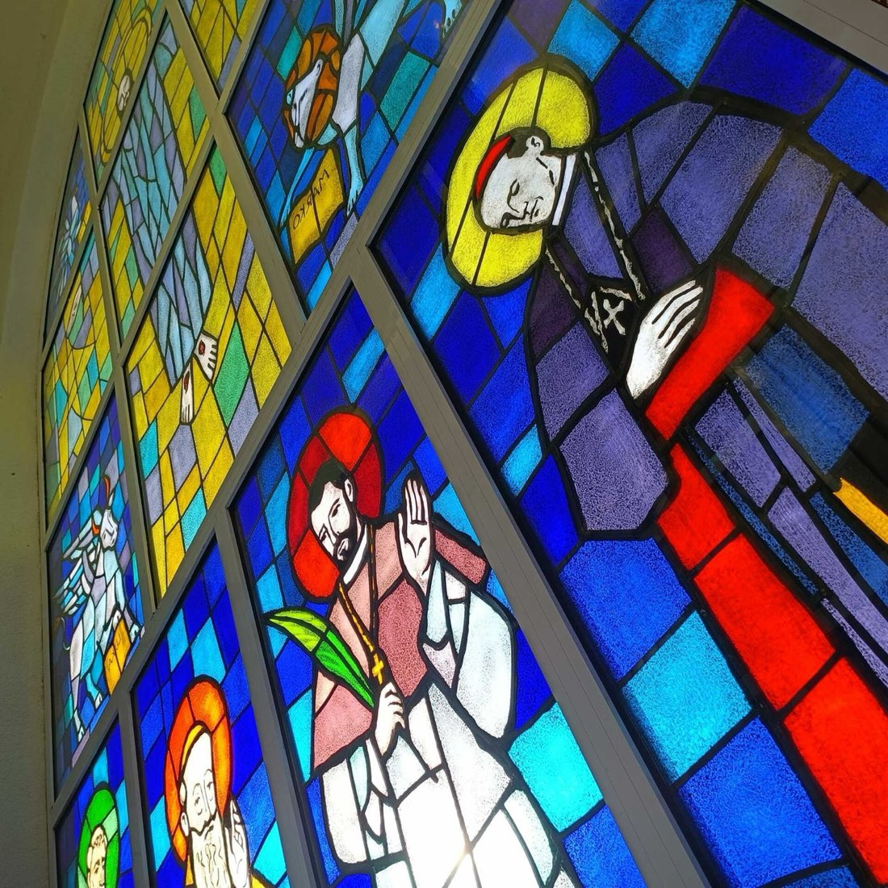
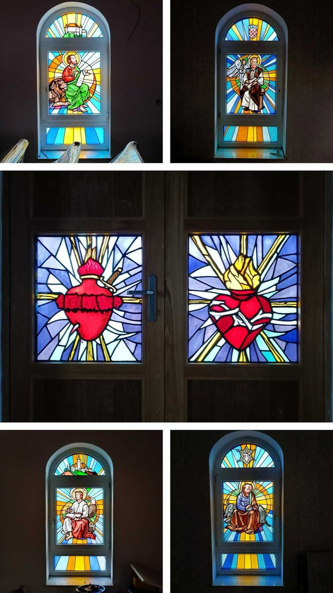
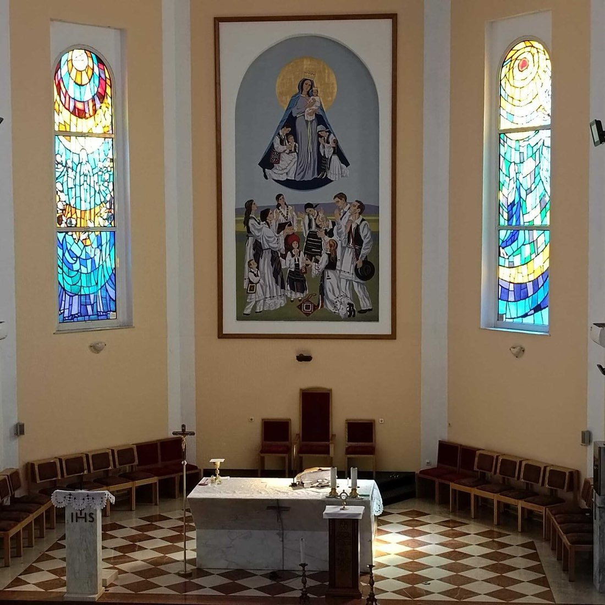
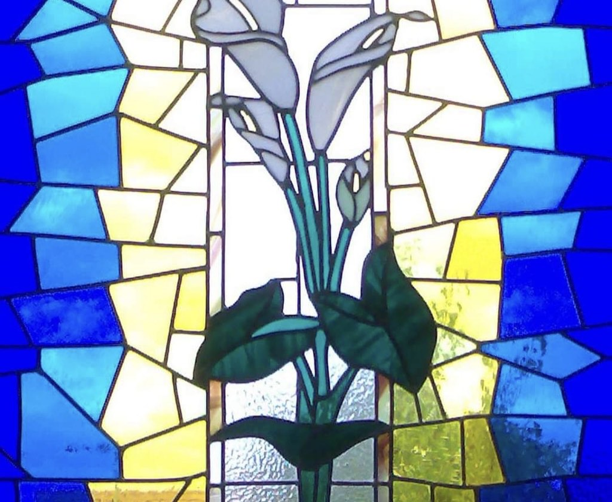

Staklo jenaša strast.Radimo čuda.
Izrađujemo i ugrađujemo vitraje, tuš kabine i staklene paravane od sigurnosnog stakla, staklene ograde i okvire za slike. Sve po mjeri, iz radione u Ulici Adama Reisnera 70.

Četiri zanata. Jedno staklo.
Od staklenih ukrasa pa sve do staklenih ograda i nadstrešnica – u ponudi imamo sve za vaš dom. Za svaku uslugu pošaljite upit ili nazovite, a mi ćemo savjetovati staklo, okove i rješenje.

01Vitraji
Izrada i restauracija vitraja, u suradnji s akademskim umjetnicima ili prema vašoj skici.
Više 02
02Tuš kabine i paravani
Po mjeri, od kaljenog stakla ili lamistala: klizne, zaokretne i preklopne kabine.
Više 03
03Staklene ograde
Laminirano i laminirano kaljeno staklo na „U” profilima, „Spyder” nosačima ili stopama.
Više 04
04Okviri za slike
Slike, gobleni, ogledala, dresovi i zastave – drveni i aluminijski okviri.
Više

Svjetlo kroz obojeno staklo.
Vitraj je slika složena od komadića obojenog stakla povezanih olovnim okvirićima. Stavljen na prozor, kroz sebe pušta sunčeve zrake i stvara najblistavije boje među svim slikarskim tehnikama.
- Višegodišnje iskustvo u izradi i restauraciji vitraja.
- Suradnja s domaćim i inozemnim akademskim umjetnicima.
- Izrada prema vašim skicama i idejama.
- Više od 1200 m² vitraj stakla u raznim bojama.
Profesionalci za staklo.
Iskustvo
Naši djelatnici imaju višegodišnje iskustvo u izradi i obradi predmeta od stakla.
Kvaliteta
Pružamo kvalitetne i brze usluge i jamčimo za kvalitetu ugrađenih predmeta.
Sve za vaš dom
Od staklenih ukrasa pa sve do staklenih ograda i nadstrešnica.
Poštena cijena
Zadovoljstvo kupaca nam je na prvom mjestu – kvalitetne usluge za male cijene.
Iz radione na zid, u kupaonicu, na stubište.
Fotografije stvarnih radova Staklorada: vitraji u crkvama i domovima, tuš kabine, staklo iza kuhinjske radne ploče i staklene ograde.


Prije nego nazovete.
Kakvo staklo ugrađujete u tuš kabine?
Isključivo sigurnosno staklo, kaljeno ili lamistal. Može biti prozirno ili neprozirno, sivo ili bronca.
Koje vrste tuš kabina radite?
Klizne sisteme, kabine sa zaokretnim vratima i preklopne kabine, sve po mjeri. Radimo i staklene paravane (pregrade), do stropa ili s ukrutama.
U kojim su bojama okovi?
Standardno siva (eloks), crna ili bijela, a mogu se izraditi i u boji po RAL karti.
Možete li izraditi vitraj prema mojoj skici?
Da. Vitraje izrađujemo i prema vlastitim skicama i idejama kupca, a radimo i restauraciju postojećih vitraja. Na skladištu imamo više od 1200 m² vitraj stakla u raznim bojama.
Kakvo staklo ide u staklenu ogradu?
Laminirano ili laminirano kaljeno staklo debljine 6.6, 8.8 ili 10.10, u raznim bojama. Nosači mogu biti aluminijski „U” profili, „Spyder” nosači ili „stope”.
Što sve možete uokviriti?
Slike, goblene i ogledala, ali i sportske dresove, nogometne rukavice, zastave i slične predmete. Imamo drvene i aluminijske okvire, a ogledala s okvirom izrađujemo po mjeri.
Radite li subotom?
Od ponedjeljka do petka radimo od 8 do 16 sati, subotom po dogovoru. Nedjeljom ne radimo.
Dođite u radionu ili nazovite.
Mobitel
Radno vrijeme
| Ponedjeljak | 8:00 – 16:00 |
| Utorak | 8:00 – 16:00 |
| Srijeda | 8:00 – 16:00 |
| Četvrtak | 8:00 – 16:00 |
| Petak | 8:00 – 16:00 |
| Subota | po dogovoru |
| Nedjelja | ne radimo |